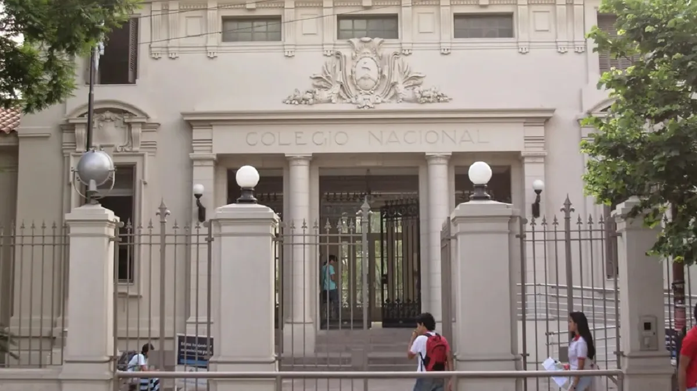
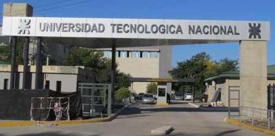
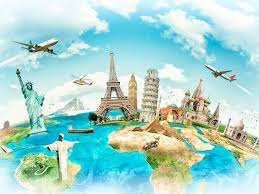
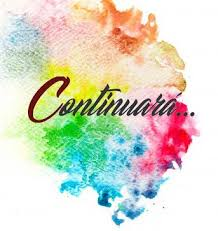

Nacimiento

Nací en la hermosa ciudad de San Salvador de Jujuy..., allá por la década del 70, más precisamente un 13 de diciembre de 1974. Según mi mamá (y el calendario) fue un día viernes. Viernes 13, de mala suerte al igual que un martes 13?, no, no lo creo. Pero así llegué al mundo. Con 4 kg y monedas. Sí, tuve sobre peso aunque no lo crean, pero fue hace muuuucho tiempo.
Familia

Mi familia principal en ese entonces estaba integrada por mi mamá Teresa, mi papá Mario y mi hermano Marco. En ese entonces no había llegado mi hermana Gi..., llegaría un tiempo después para sacarme del reinado que ocupaba. Y más allá de la familia principal siempre estuve rodeado de tías, tíos y primos. Imaginensé, 8 hermanos por el lado de mi papá y 9 hermanos por el lado de mi mamá.
Primario y secundario

Mis estudios primarios lo cursé en la Escuela 23 de Agosto del Barrio Cuyaya. Y mis estudios secundarios en la Escuela Nacional de Comercio Número 1 (Los Loros). En la infancia ya empecé a tener mis primeros amigos de Barrio Norte y luego se fue expandiendo a amigos de Cuyaya y muchos más amigos del colegio Secundario. Gracias a Dios con todos ellos tenemos algún tipo de contacto, puede que no sea seguido, pero siempre están.
Universidad

La parte universitaria la hice en la Ciudad de Córdoba, en la Universidad Tecnológica Nacional. Eso me permitió empezar a desarrollarme en el mundo laboral. Justamente allí fue donde encontré mi rumbo en la vida. También hice de muchas amistades que al día de hoy estamos en contacto. Amigos de la facultad y también amigos fuera de la facultad.
Etapa Laboral
Comencé trabajando para una empresa de software en Córdoba. A través de la misma, tuve la chance de trabajar no sólo en Córdoba, sino también tuve estadías en Paraná, Mendoza, Chile y Buenos Aires, donde finalmente me instalé a fines del 2009.
Viajes

Antes de salir al exterior quise conocer más mi provincia y país. Aunque siempre faltará algún lugar más para conocer, emprendí viaje a distintos destinos del mundo: Uruguay, Chile, Bolivia, Paraguay, Brasil, Ecuador, Colombia, Guatemala, México, Bél ice, Estados Unidos, Sudáfrica, Portugal, España, Francia, Bélgica, Países Bajos, Inglaterra, Escocia, Dinamarca, Alemania, Polonia, República Checa, Austria, Eslovaquia, Hungría, Suiza, Italia, Grecia, Nueva Zelanda, Isla de Pascua y por supuesto Ucrania.
Conociendo a la extranjera
Por esos destinos de la vida, conocí a la que es mi actual esposa en el año 2017. Fui con una amiga a un evento y casualmente Ale había ido para ver a mi amiga. Desde el primer momento hubo una gran conexión. Y así fue que tres meses después nos fuimos a vivir juntos. Y mucho antes de cumplir nuestro primer año de conocernos, ya nos compramos un departamento para vivir juntos. Al año siguiente ya estábamos casados. Creo que tener esa conexión hace que sucedan esas cosas.
Nuevo integrante

Y bueno..., el nuevo integrante de la familia llegó dos años después de casarnos. Llegó en medio de la pandemia y nos trajo una alegria inconmensurable. Así fue que un día 15 de marzo del año 2021 nació en el Hospital Italiano de la Ciudad de Buenos Aires nuestro hijo. Desde ese entonces no para todos los días de soprendernos con cosas nuevas. Ser padres primerizos es una bendición y un descubrimiento diario de lo que va creciendo y aprendiendo tu hijo.
Continuará...

Y hoy me tienen acá, festejando mi cumple. A pesar de estar viviendo lejos, uno nunca olvida los suyos. Esto es un festejo para recordar los afectos que uno tiene desde la infancia y que nunca desaparecen. Esto sigue y continúa...